Introduction
In April 2019 I came across an advert for a Arcade clear out. Mostly it was Noraut Pokers but there was also a Virtua Racing Cabinet.
{kind=link}
It was 6 miles from the house so I had a look and ended up taking it home. The Monitors had been stored locally but the back section was stored somewhere else. In general there was a lot of surface rust on the metal parts but for it's age and how it was stored it wasn't too bad. I knew it was biting of more than I should, but it was too close to pass. It was untested, which as always means not working.
{kind=link}
{kind=link}
Initial look
When I got this back home I initially had a look around the cabinet. The front part seems to have been stored relatively well and was in pretty good condition. The back end was in worse condition, the trim was falling off and some of the boards were in pretty bad condition.
The exterior artwork was largely covered in perspex so it's also in pretty good condition. Need to make a choice whether to leave the perspex, remove it or replace it.
Internals
| Pic | Notes |
|---|---|
| 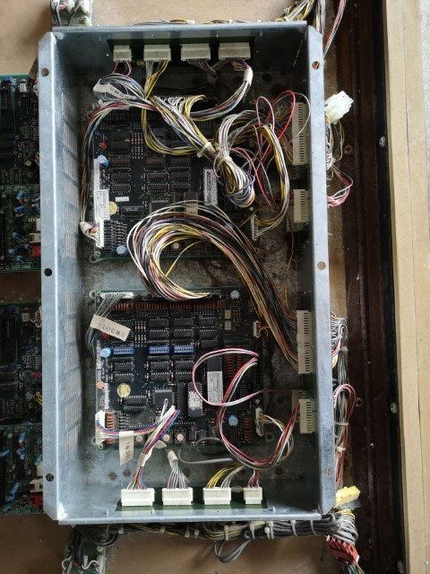 | IO Board The IO and Audio boards on the top part of the back box seem to be in pretty good condition. A little dust where the io boards were enclosed. |
| 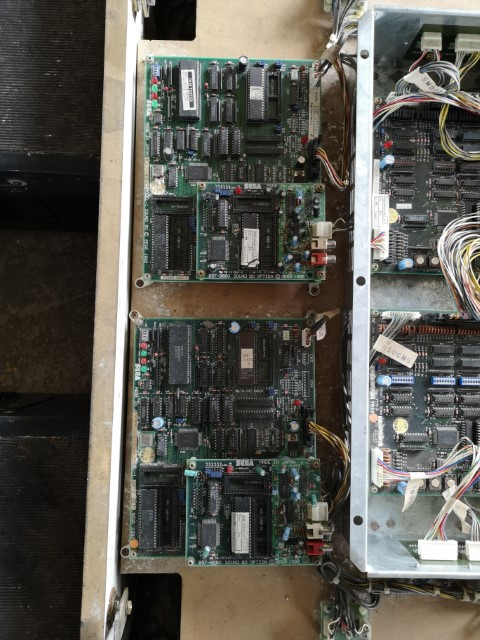 | Audio Board |
| 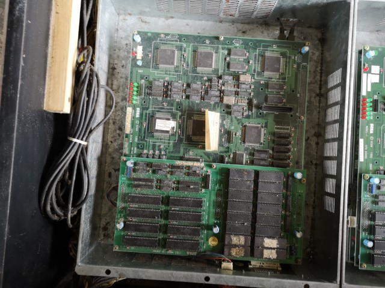 | CPU Board 1 The board in the lower part of the box were slightly worse, little more dirt and grime. |
| 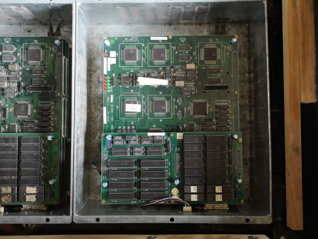 | CPU Board 2 |
| 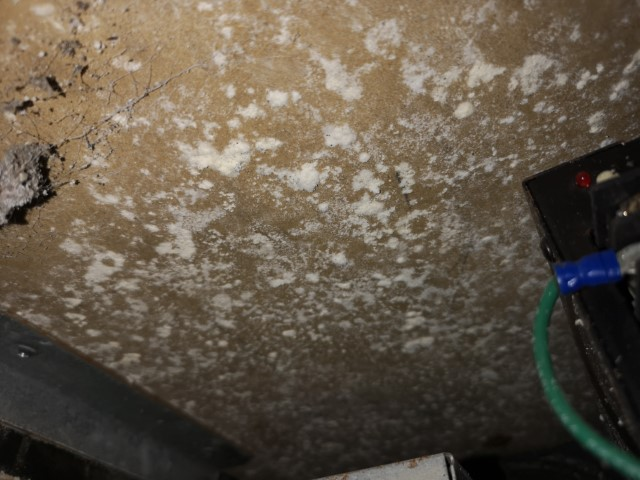 | Mold The underside of the IO boards was covered in a nasty white mold. Gave it a clean with some bleach and a brush and this kept it away so far. Seen another refurb who gave this a fresh coat of red paint so will likely give that go |
| 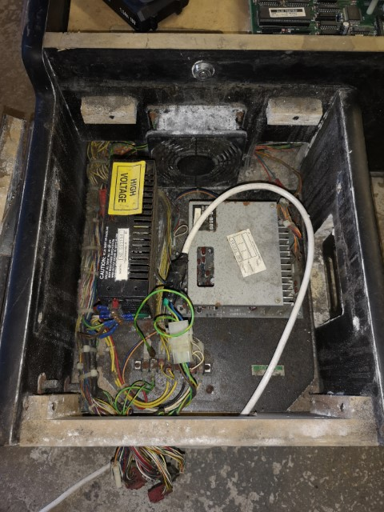 | PSU Enclosure Both the PSU enclosures seemed to be prety full of dust and dirt. Must have been some damp in there too as the boards and connections are all pretty rusted and I'll share later where the audio amps are losing components. |
| 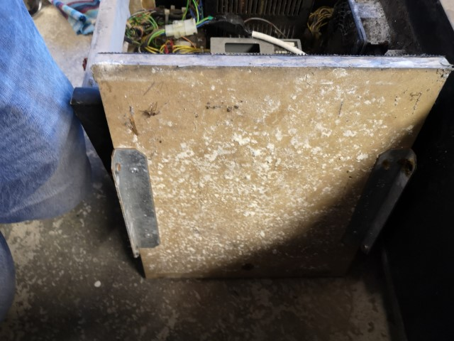 | PSU Mold |
| 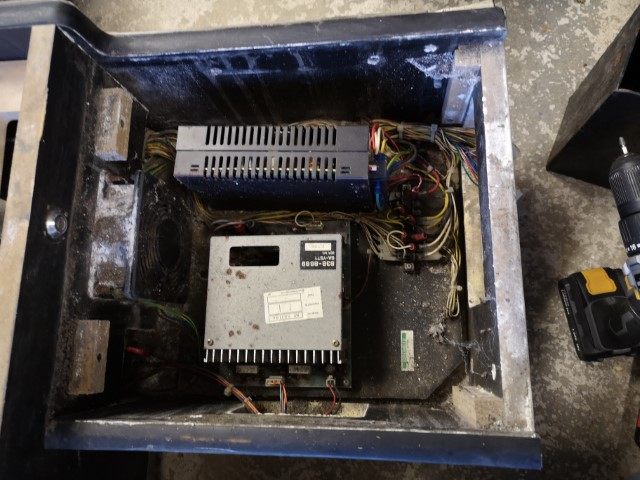 | PSU Enclosure 2 This PSU was failing but was a simple replacement with a standard one. |
| 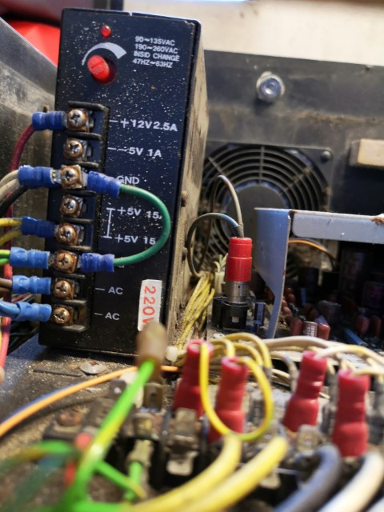 | PSU Closeup |
| 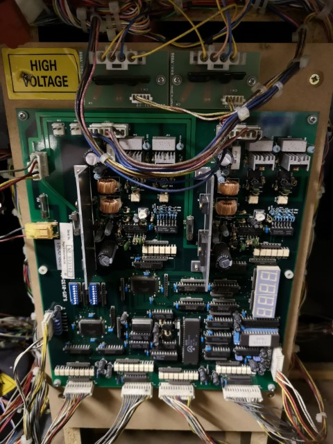 | Main Drive Board This is the only processing board housed in with the monitors. It's in way better condition than the rear boards. |
| 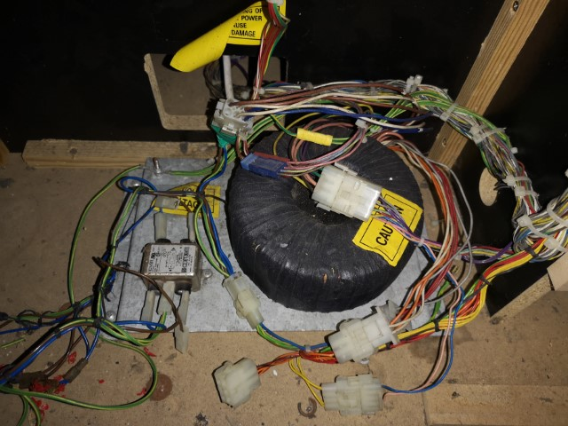 | The transformer. It let me down :( |
{kind=link}
{kind=link}
{kind=link}
{kind=link}
{kind=link}
{kind=link}
{kind=link}
{kind=link}
{kind=link}
{kind=link}
{kind=link}
Monitors
One of the first things I did was to disconnect the monitors since they were likely to fail. The machine was sold as working when it was last in use, but it's clear the first monitor has a blown power board
Cleanup
Used a hoover , paint brushes, air duster & contact cleaner.
| 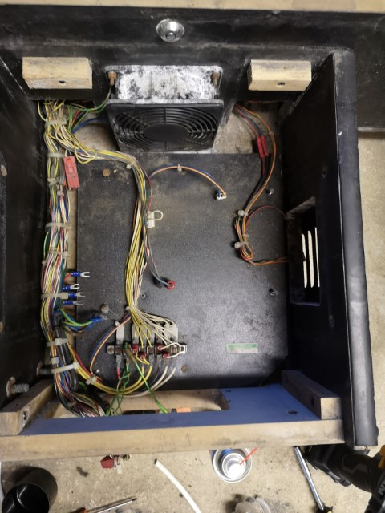 | |
| 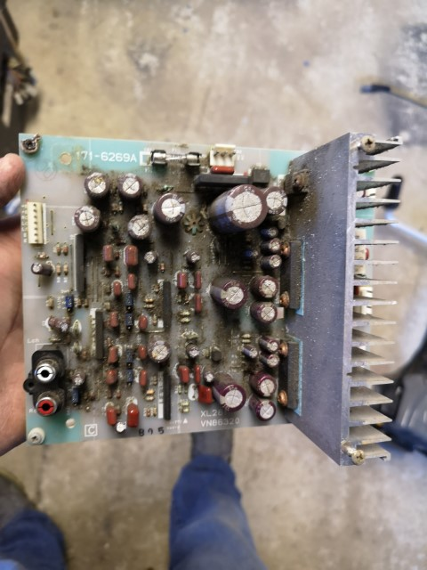 | 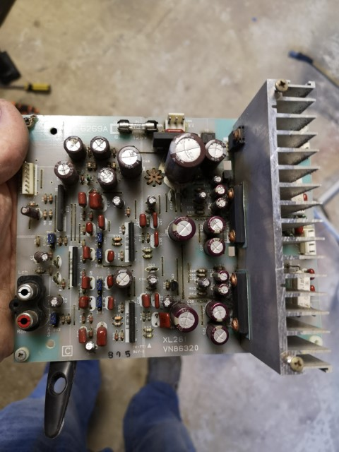 |
| 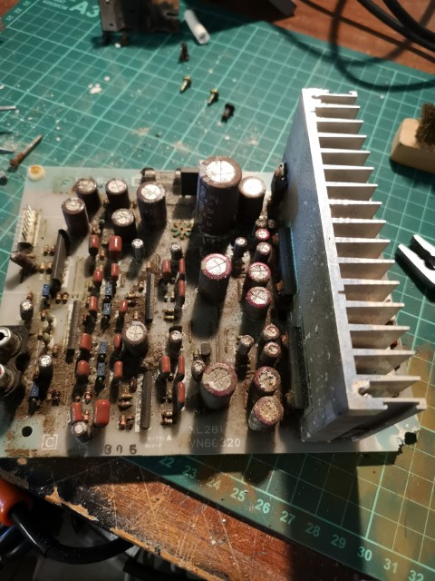 | 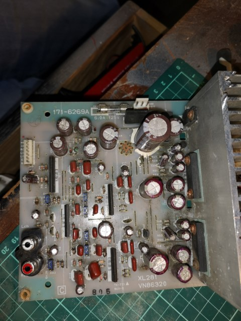 |
{kind=link}
{kind=link}
{kind=link}
{kind=link}
{kind=link}
One of the audio boards was in pretty bad shape,
| 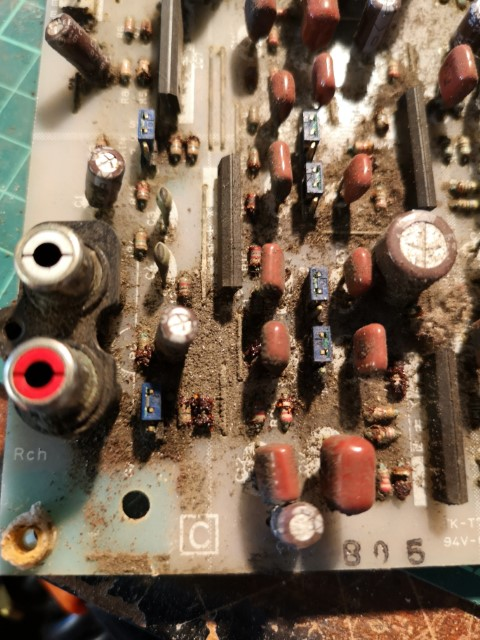 | 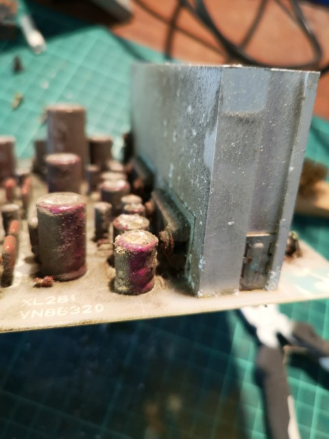 | 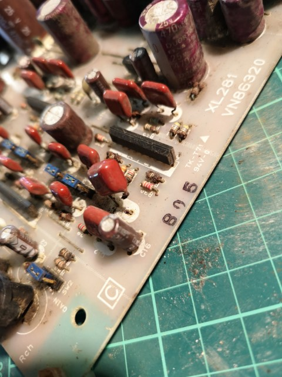 |
{kind=link}
{kind=link}
{kind=link}
Notes
I had to Drill out the locks